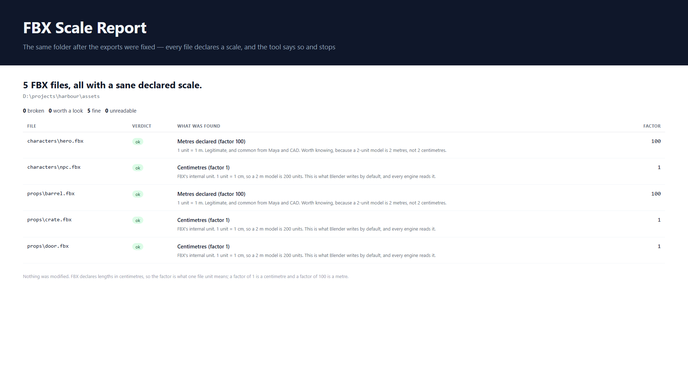

A Blender add-on that reports the unit scale declared inside every FBX file in a folder, and names the ones that are wrong. It reads the files and changes nothing.
Looking for the explanation rather than the tool? The three questions this add-on exists to answer are written out on the studio's site: what an FBX declares, why a model imports at the wrong size, and what Unity and Unreal each expect.
What it looks like

Why this exists
An FBX file does not only contain a model. It also contains a statement
about how big that model is — a field called UnitScaleFactor.
FBX counts in centimetres, so a factor of 1 means one unit is
a centimetre and 100 means one unit is a metre.
When files arrive from different places — some from Blender, some bought, some from CAD — those factors disagree, and the models come out the wrong size. The awkward part is that Blender applies the factor while importing and then forgets it, so a tool that imports a file cannot tell you what the file actually said. This one reads the file.
Support
Problems, questions, and anything else:
itwins19@gmail.comA real person reads it. The fastest way to get a fix is to say which page or file caused the trouble — most issues turn out to be about one particular exporter's idea of scale.
Bugs and feature requests can also go to the issue tracker.
Also usable without Blender
The checking logic has no Blender dependency, so it runs anywhere Python 3.9 or newer does. The exit code is 1 when a file has a broken scale, so it can go in a pipeline.
| Command | What it does |
|---|---|
python -m core.cli <folder> | Report to the console |
… --csv r.csv --html r.html | Also write reports |
… --quiet | Headline only |
… --no-recursive | Skip subfolders |
What it deliberately does not do
- It does not fix the scale. Changing a factor is a decision about intent — a file ten times off might need the file changed, or the export settings, or nothing at all. It reports; you decide.
- It does not read binary FBX. It says so, by name, rather than reporting “fine” on a file it could not read.
- It does not modify anything. Not the FBX files, not the scene.
Licence
GPL-3.0-or-later. The source is in this repository; the add-on itself is
built from it by scripts/build_zip.py.